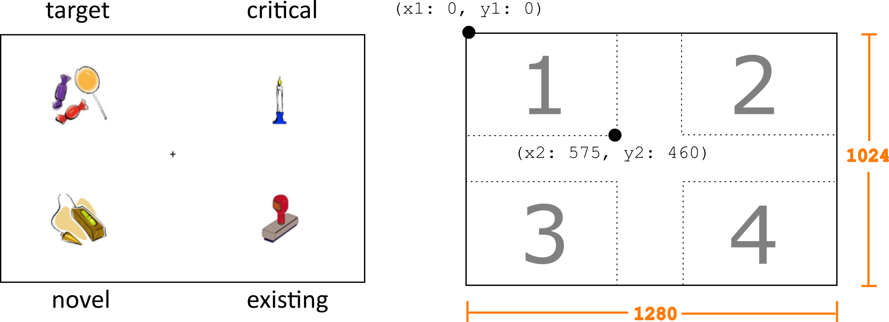
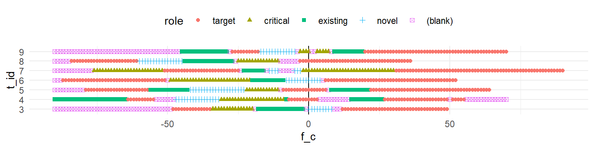
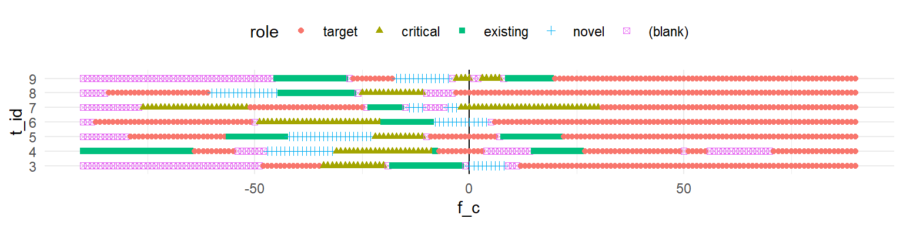

| sub_id | t_id | f_c | x | y |
|---|---|---|---|---|
| 1 | 1 | -90 | 1010 | 209 |
| 1 | 1 | -89 | 1010 | 214 |
| 1 | 1 | -88 | 1020 | 216 |
| 1 | 1 | -87 | 1014 | 217 |
| 1 | 1 | -86 | 1027 | 221 |
| 1 | 1 | -85 | 1027 | 220 |
2 Mapping gaze to areas of interest
At this point we have epoched our eyetracking data, resulting in the edat-epoched.rds file which looks like so:
We know when people are looking relative to the disambiguation point for the trial (f_c), and we know where they are looking, because we have the (x, y) coordinates. But we yet don’t know which image they are looking at on each frame. So we have to map the two-dimensional gaze coordinates onto the coordinates of the images that was displayed on a given trial.

We know what pictures were shown on each trial from the data in the screens table (from data-raw/screens.csv).
screens <- read_csv("data-raw/screens.csv",
col_types = "iicc")The table looks like so.
# A tibble: 1,024 × 4
s_id loc role bitmap
<int> <int> <chr> <chr>
1 1 3 critical bacon.bmp
2 1 4 existing EDsandcastle.bmp
3 1 2 novel ND_104.bmp
4 1 1 target baker.bmp
5 2 3 critical penny.bmp
6 2 4 existing EDsandcastle.bmp
7 2 2 novel ND_104.bmp
8 2 1 target baker.bmp
9 3 2 critical beetle.bmp
10 3 4 existing EDcaptain.bmp
# … with 1,014 more rows| variable | type | description |
|---|---|---|
| s_id | arbitrary value uniquely identifying each display screen | |
| loc | arbitrary integer identifying each rectangle | |
| role | image’s role in the set (target, critical, existing novel) | |
| bitmap | name of bitmap file |
The loc variable is a number that refers to the four quadrants of the screen where the images appeared. We can get the pixel coordinates representing the top left and bottom right corners of each rectangle from the locations table.
locations <- read_csv("data-raw/locations.csv",
col_types = "iiiii")# A tibble: 4 × 5
loc x1 y1 x2 y2
<int> <int> <int> <int> <int>
1 1 0 0 575 460
2 2 704 0 1279 460
3 3 0 564 575 1023
4 4 704 564 1279 1023| variable | type | description |
|---|---|---|
| loc | arbitrary integer identifying each rectangle | |
| x1 | horizontal coordinate of top-left corner in pixels | |
| y1 | vertical coordinate of top-left corner in pixels | |
| x2 | horizontal coordinate of bottom-right corner in pixels | |
| y2 | vertical coordinate of bottom-right corner in pixels |
2.1 Image locations for each trial
2.1.1 Activity: Get coordinates
We want to combine the data from screens and locations with trial info to create the following table, which we will use later to figure out what image was being looked at (if any) on each frame of each trial. Save this information in a table named aoi (for Area Of Interest). You might need to reference Appendix A to see how to get sub_id and t_id into the table.
# A tibble: 22,576 × 8
sub_id t_id s_id role x1 y1 x2 y2
<int> <int> <int> <chr> <int> <int> <int> <int>
1 1 1 183 critical 704 564 1279 1023
2 1 1 183 existing 0 564 575 1023
3 1 1 183 novel 0 0 575 460
4 1 1 183 target 704 0 1279 460
5 1 2 194 critical 0 564 575 1023
6 1 2 194 existing 704 0 1279 460
7 1 2 194 novel 0 0 575 460
8 1 2 194 target 704 564 1279 1023
9 1 3 33 critical 704 0 1279 460
10 1 3 33 existing 0 564 575 1023
# … with 22,566 more rows
Solution
We can get sub_id and t_id from trials. But to get there from screens, we need to get the item version (iv_id) from stimuli. We can connect screens to stimuli through the screen id (s_id).
trials <- read_csv("data-raw/trials.csv",
col_types = "iiiiii")
stimuli <- read_csv("data-raw/stimuli.csv",
col_types = "iiciccc")
aoi <- trials %>%
select(sub_id, t_id, iv_id) %>%
inner_join(stimuli, "iv_id") %>%
inner_join(screens, "s_id") %>%
inner_join(locations, "loc") %>%
select(sub_id, t_id, s_id, role, x1, y1, x2, y2)As a check, we should have four times the number of rows as trials (5644), because there should be four areas of interest for each trial. We can use stopifnot() to make our script terminate if this condition is not satisfied.
stopifnot( nrow(aoi) == 4 * nrow(trials) )2.2 Identifying frames where the gaze cursor is within an AOI
What we need to do now is look at the (x, y) coordinates in edat and see if they fall within the bounding box for each image in the aoi table for the corresponding trial.
2.2.1 Activity: Create frames_in
There are different ways to accomplish this task, but an effective strategy is just to join the eyedata (edat) to the aoi table and retain any frames where the x coordinate of the eye gaze is within the x1 and x2 coordinates of the rectangle, and the y coordinate is within the y1 and y2 coordinates. Because our AOIs do not overlap, the gaze can only be within a single AOI at a time.
Name the resulting table frames_in.
Hint
Some code to get you started.
edat %>%
inner_join(aoi, c("sub_id", "t_id")) # %>%
## filter(...) # A tibble: 759,311 × 4
sub_id t_id f_c role
<int> <int> <int> <chr>
1 1 1 -90 target
2 1 1 -89 target
3 1 1 -88 target
4 1 1 -87 target
5 1 1 -86 target
6 1 1 -85 target
7 1 1 -84 target
8 1 1 -83 target
9 1 1 -82 target
10 1 1 -81 target
# … with 759,301 more rows
Solution
frames_in <- edat %>%
inner_join(aoi, c("sub_id", "t_id")) %>%
filter(x >= x1, x <= x2,
y >= y1, y <= y2) %>%
select(sub_id, t_id, f_c, role)2.2.2 Activity: Create frames_out
Create a table frames_out containing only those frames from edat where the gaze fell outside of any of the four image regions, and label those with the role (blank). Use the anti_join() function from dplyr to do so.
The resulting table should have the format below.
# A tibble: 182,504 × 4
sub_id t_id f_c role
<int> <int> <int> <chr>
1 1 1 -69 (blank)
2 1 1 -68 (blank)
3 1 1 -66 (blank)
4 1 1 -49 (blank)
5 1 1 -9 (blank)
6 1 1 -8 (blank)
7 1 1 -7 (blank)
8 1 1 -6 (blank)
9 1 1 -5 (blank)
10 1 1 -4 (blank)
# … with 182,494 more rows
Hint: Show me an example of
anti_join()
table_x <- tibble(letter = c("A", "B", "C", "D", "E"),
number = c(1, 2, 3, 4, 5))
table_x# A tibble: 5 × 2
letter number
<chr> <dbl>
1 A 1
2 B 2
3 C 3
4 D 4
5 E 5table_y <- tibble(letter = c("C", "D", "E"),
number = c(3, 4, 99))
table_y# A tibble: 3 × 2
letter number
<chr> <dbl>
1 C 3
2 D 4
3 E 99## which rows in table_x are not in table_y?
anti_join(table_x, table_y, c("letter", "number"))# A tibble: 3 × 2
letter number
<chr> <dbl>
1 A 1
2 B 2
3 E 5
Solution
frames_out <- edat %>%
select(sub_id, t_id, f_c) %>%
anti_join(frames_in, c("sub_id", "t_id", "f_c")) %>%
mutate(role = "(blank)")A good test to do at this point is to make sure that all 941,815 rows of edat have been assigned to either frames_in or frames_out.
stopifnot( nrow(edat) == (nrow(frames_in) + nrow(frames_out)) ) # TRUE2.2.3 Activity: Combine into pog
Combine frames_in and frames_out into a single table by concatenating the rows. Sort the rows so by sub_id, t_id, and f_c, and convert role into type factor with levels in this order: target, critical, existing, novel, and (blank). The resulting table should be called pog and have the format below.
# A tibble: 941,815 × 4
sub_id t_id f_c role
<int> <int> <int> <fct>
1 1 1 -90 target
2 1 1 -89 target
3 1 1 -88 target
4 1 1 -87 target
5 1 1 -86 target
6 1 1 -85 target
7 1 1 -84 target
8 1 1 -83 target
9 1 1 -82 target
10 1 1 -81 target
# … with 941,805 more rows
How do I concatenate two tables?
Use the bind_rows() function from {dplyr}.
Solution
We might want to check that role has been defined properly.
pog %>%
pull(role) %>%
levels()[1] "target" "critical" "existing" "novel" "(blank)" 2.3 Dealing with trial dropouts
We want to be able to use the data in pog to calculate probabilities of gazing at regions over time. However, we are not ready to do this yet.
If we look at the first seven trials from subject 3, we can see that there is a problem, because the trials end at different times, due to variation in response time. If we plot the resulting data, we will have fewer and fewer data points as we progress through the trial.

A solution to this is to make each time series “cumulative to selection”, which means padding frames after the trial ends with artificial looks to the object that was selected. In other words, we pretend that the subject remained fixated on the selected object after clicking.
But before we do this, we should double check that trials also start at the same frame (-90). Once we pass this sanity check we can pad frames at the end.
start_frame <- edat %>%
group_by(sub_id, t_id) %>%
summarise(min_f_c = min(f_c), # get the minimum frame per trial
.groups = "drop") %>%
pull(min_f_c) %>%
unique() # what are the unique values?
## if the value is the same for every trial, there should be
## just one element in this vector
stopifnot( length(start_frame) == 1L )
start_frame[1] -902.3.1 Activity: Selected object
Which object was selected on each trial? The trials table tells us which location was clicked (1, 2, 3, 4) but not which object. We need to figure out which object was clicked by retrieving that information from the screens table. The result should have the format below.
# A tibble: 5,644 × 3
sub_id t_id role
<int> <int> <chr>
1 1 1 target
2 1 2 target
3 1 3 target
4 1 4 target
5 1 6 target
6 1 7 target
7 1 11 target
8 1 13 target
9 1 14 target
10 1 16 target
# … with 5,634 more rows
Solution
## which object was selected on each trial?
selections <- trials %>%
inner_join(stimuli, "iv_id") %>%
inner_join(screens, c("s_id", "resploc" = "loc")) %>%
select(sub_id, t_id, role)Now that we know what object was selected, we want to pad trials up to the latest frame in the dataset, which we determined during epoching as frame 90 (that is, 1.5 seconds after the disambiguation point).
We will use the crossing() function (from {tidyr}) to create a table with all combinations of the rows from selections with frames f_c from 0 to 90. Then, in the next activity, we will use anti_join() to pull out the combinations that are missing from pog, and use them in padding.
all_frames <- crossing(selections, tibble(f_c = 0:90))
all_frames# A tibble: 513,604 × 4
sub_id t_id role f_c
<int> <int> <chr> <int>
1 1 1 target 0
2 1 1 target 1
3 1 1 target 2
4 1 1 target 3
5 1 1 target 4
6 1 1 target 5
7 1 1 target 6
8 1 1 target 7
9 1 1 target 8
10 1 1 target 9
# … with 513,594 more rows2.3.2 Activity: Pad frames
Use anti_join() to find out which frames in all_frames are missing from pog. Concatenate these frames onto pog, storing the result in pog_cts. The resulting table should have a variable pad which is FALSE if the frame is an original one, and TRUE if it was added through the padding procedure. Sort the rows of pog_cts by sub_id, t_id, and f_c. The format is shown below.
# A tibble: 1,021,288 × 5
sub_id t_id f_c role pad
<int> <int> <int> <chr> <lgl>
1 1 1 -90 target FALSE
2 1 1 -89 target FALSE
3 1 1 -88 target FALSE
4 1 1 -87 target FALSE
5 1 1 -86 target FALSE
6 1 1 -85 target FALSE
7 1 1 -84 target FALSE
8 1 1 -83 target FALSE
9 1 1 -82 target FALSE
10 1 1 -81 target FALSE
# … with 1,021,278 more rows
Solution
One thing that may have happened in the process above is that role is no longer a factor. So let’s convert it back before we finish.
pog_cts2 <- pog_cts %>%
mutate(role = fct_relevel(role, c("target", "critical",
"existing", "novel", "(blank)")))Now let’s double check that the padding worked by looking again at some trials from subject 3.

Looks good. Now let’s save all our hard work so that we can use pog_cts2 as a starting point for analysis.
saveRDS(pog_cts2, "data-derived/pog_cts.rds")